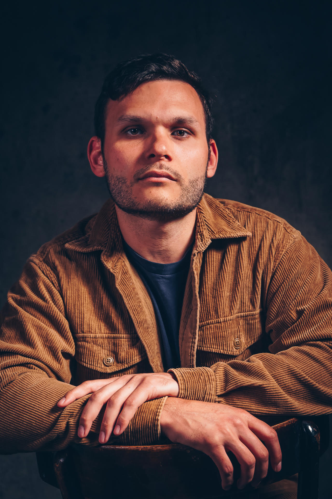

About

Photo by Flore Vallery-Radot
Dylan Nicholls is a documentary film director and producer.
He holds a Master of Arts Screen: Documentary (2024) from the Australian Film, Television and Radio School (AFTRS). He was the recipient of the inaugural Netflix First Nations Scholarship, and completed an AIDC x ABC Indigenous placement in 2025.
A proud Yuwaalaraay man, Dylan is drawn to untold stories about First Nations people, community, history, identity and culture. Growing up in regional NSW, he has a particular love for stories from the bush and regional Australia. He works as a director and producer, with skills across camera operation and editing.
Dylan has a background as a Clinical Psychologist and Youth Worker.